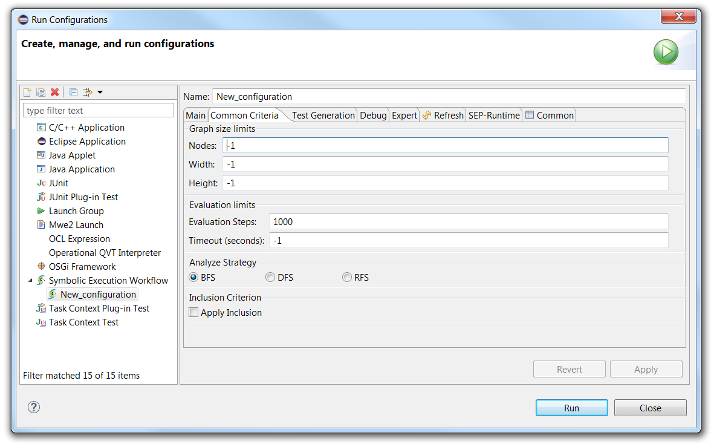

Common Criteria Tab
The tab is shown below :

In "Graph size limits" :
- "Nodes" gives the maximal number of nodes of the symbolic execution tree (when it is -1 there is no limit)
- "Width" gives the maximal width of the symbolic execution tree (when it is -1 there is no limit)
- "Height" gives the maximal height of the symbolic execution tree (when it is -1 there is no limit)
In "Evaluation limits" :
- "Evaluation Steps" gives the maximal number of steps of calculus during the symbolic execution (when it is -1 there is no limit)
- "Timeout" gives the maximal duration of the symbolic execution (when it is -1 there is no limit)
In "Analyze Strategy", the user can choose the algorithm that is used for the creation of the tree :
- "BFS" is Breadth First Search
- "DFS" is Depth First Search
- "RFS" is Random First Search